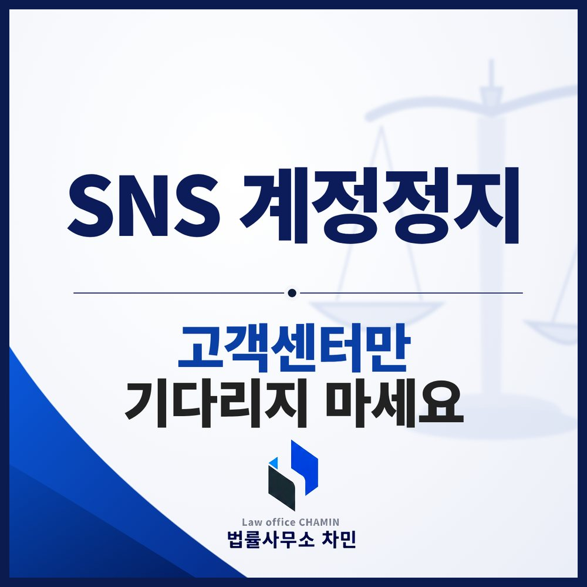

공동구매나 광고로 영업하는 비즈니스 계정은 정지되는 날부터 매출이 끊깁니다. 고객센터 답변만 기다리다 몇 달을 보내는 경우가 많아, 초기에 할 수 있는 대응을 한꺼번에 하는 것이 중요합니다.

자주 문제 되는 정지 사유
- 육아·가족 일상 계정: 아동이 등장하는 사진과 관련한 사람 보호 규정 위반
- 뷰티·다이어트 계정: 식욕 억제 같은 표현으로 섭식장애·자해 관련 규정 위반, 노출 이미지 관련 가이드라인 위반. 공동구매 홍보 문구 때문에 게시물 삭제나 라이브·광고 기능이 제한되기도 합니다.
- 코인·경제·타투 계정: 사기 및 부정행위 관련 규정 위반
- 계정 무결성 위반: 사칭, 허위 정보, 자동화 도구 사용 등. 특히 한 기기에서 여러 계정을 운영하면 하나가 정지될 때 여러 계정이 함께 정지되는 경우가 많습니다.
- 개인 계정: 팬 계정의 저작권·지식재산권 문제, 연결된 비즈니스 계정의 정지 여파
고객센터만 기다리면
앱 안의 재검토 요청이나 고객센터 문의를 해도 답이 늦거나 “확인해 보라”는 답변만 반복되는 경우가 많습니다. 비즈니스 계정은 하루하루가 손실이므로, 재검토 요청과 함께 법적 대응을 초기에 같이 준비하는 것이 합리적입니다.
내용증명은 사안별로
플랫폼을 운영하는 회사에 대리인 명의로 내용증명을 보내는 방법이 있습니다. 다만 여러 사람의 이름을 묶어 “소송하겠다”고만 쓰거나 복사해 붙인 문서는 일반 문의와 다르게 취급되기 어렵습니다. 다음 내용을 사안별로 구체적으로 담아야 합니다.
- 통지받은 정지 사유와 해당 게시물, 계정의 실제 운영 내용
- 그 게시물이 이용약관과 커뮤니티 가이드라인을 위반하지 않는 이유
- 정지로 인한 영업 손해와 그 근거
- 복구되지 않을 경우 검토할 법적 조치
일부 잘못이 있다면, 비례성
저작권 문제처럼 일부 위반이 있더라도, 계정 전체를 없애거나 광고 기능을 막는 것이 위반 정도에 비해 지나치다는 주장을 할 수 있습니다. 문제 된 게시물을 정리하는 조치를 함께 하면서 내용증명을 보내는 것이 좋습니다. 복구 여부와 기간은 사안마다 달라 미리 단정할 수 없습니다.
해외 법인에 보냈는데 답이 없다면
해외에 거주하며 외국 법인 창구로 요청했지만 진척이 없는 경우, 국내 법인을 통한 대응을 함께 검토할 수 있습니다. 소송까지 가면 관할과 송달 문제를 따로 검토해야 합니다. 계정 정지 일반은 인스타그램 계정정지 칼럼에서 다뤘습니다.
익산에서 계정이 정지됐다면
정지 알림 화면, 문제 된 게시물, 재검토 요청 내역, 계정으로 발생하던 매출 자료를 바로 캡처해 두세요. 익산민사전문변호사와 상의하면 정지 사유를 분석해 내용증명에 담을 주장과 자료를 정리할 수 있습니다.